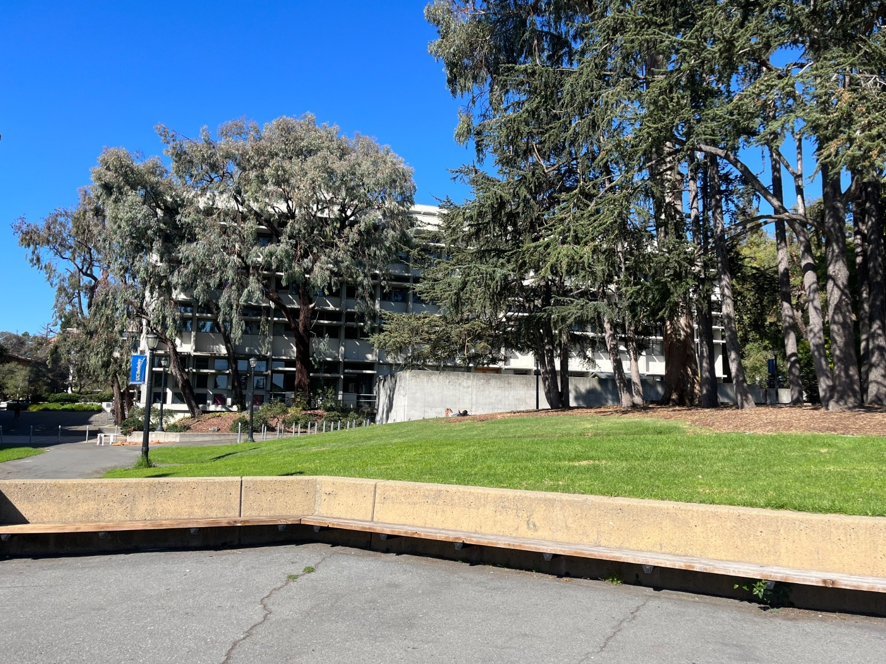
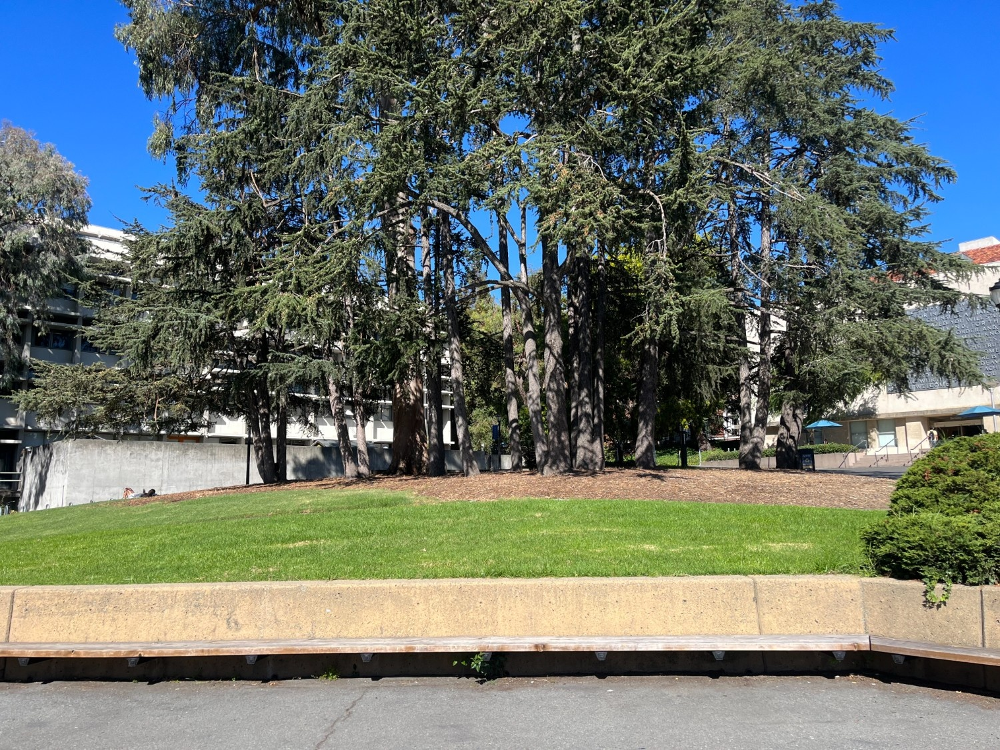
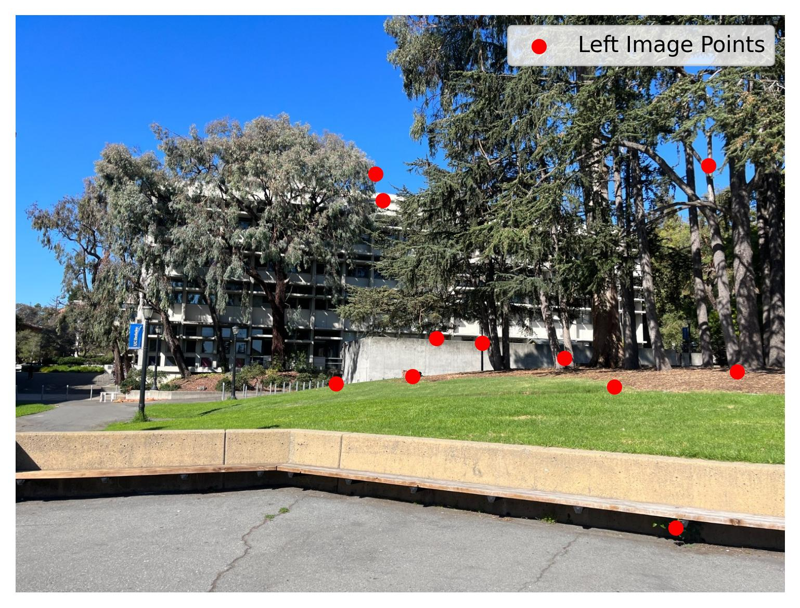
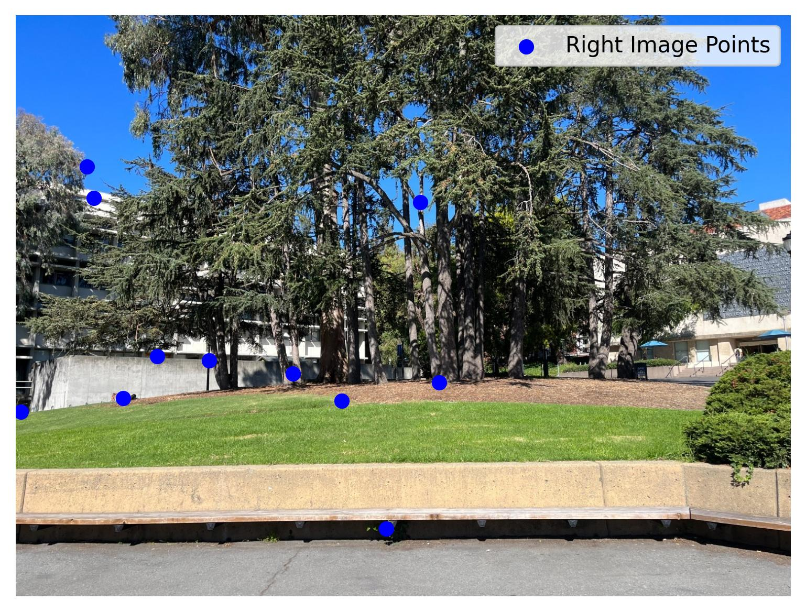
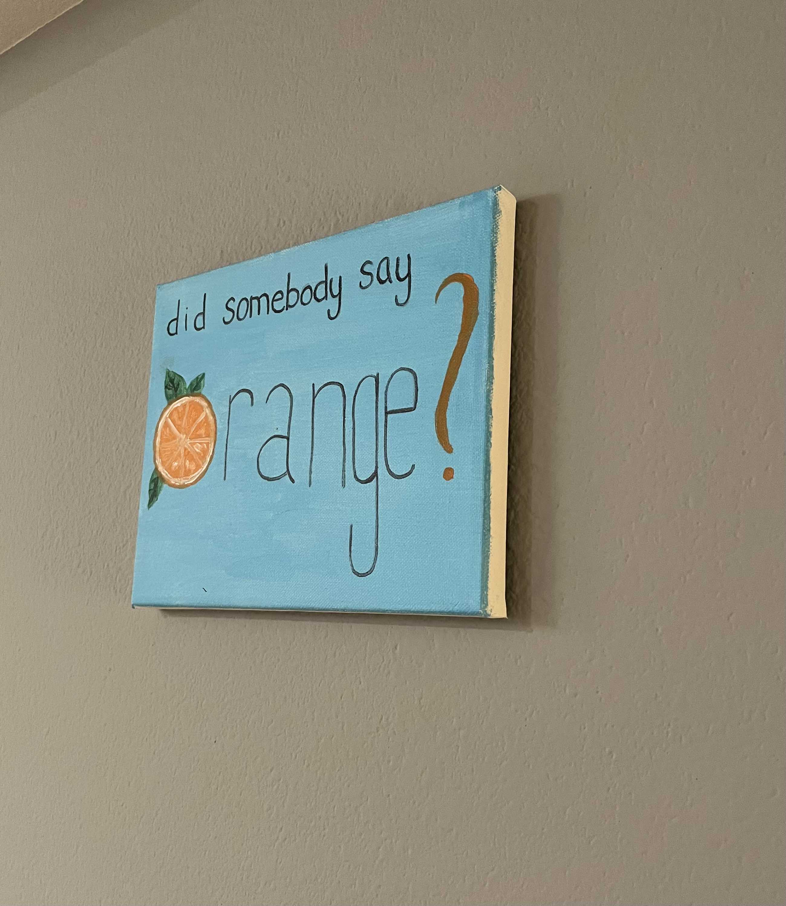
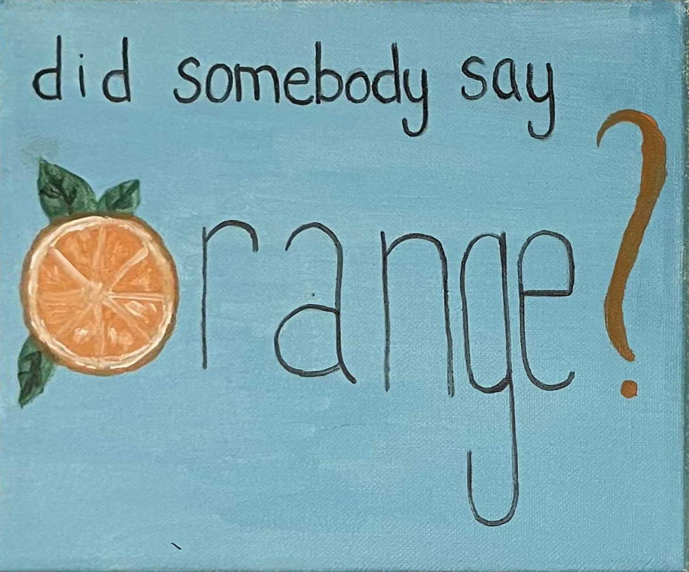
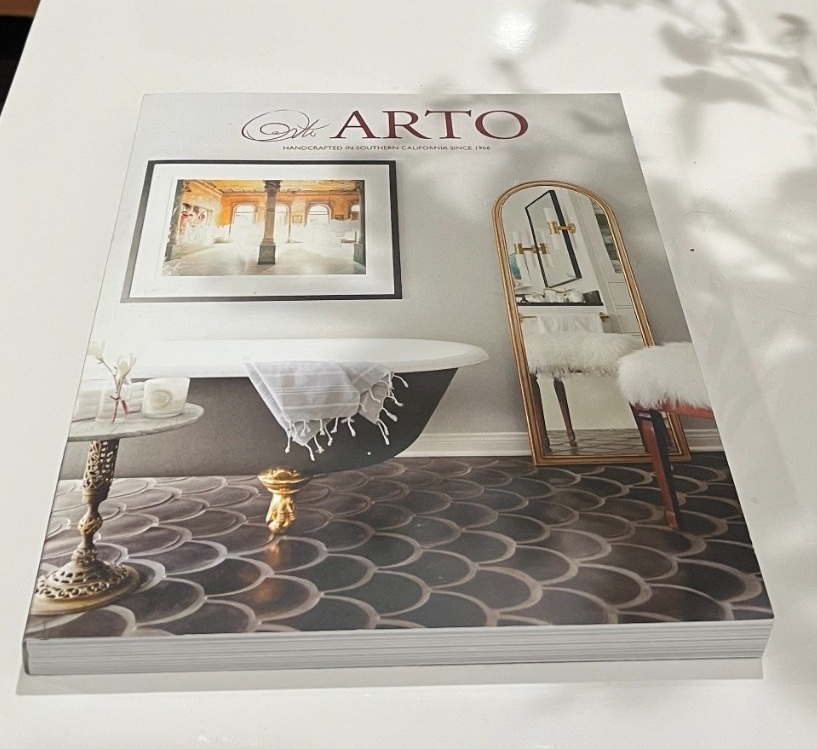

I took two pictures of the College of Environmental Design building and surroundings where the transforms between them is projective.I did this by fixing the center of rotation
and rotating my camera.

Left Image

Right Image
A.2: Recover Homographies
I used the website provided to choose the correspondences for the two images. They are shown below.

Left Image Correspondences

Right Image Correspondences
To compute the homography matrix of the transformation, we need to solve the following system of equations
using least squares:
I rectified two images using both nearest neighbor and bilinear interpolation. I noticed that the results were
very similar when using nearest neighbor to when using bilinear interpolation, but bilinear interpolation yielded
more clear images as I noticed there was a bit of a blur in the rectified images using NN.

Original ImageRectified with NN

Rectified with bilinear

Original ImageRectified with NNRectified with bilinear
A.4: Blend The Images Into A Mosaic
In order to blend my images into a mosaic, I decided to leave one image unwarped and warp the other imsage
into its projection. In order to align the images before blending, I computed the offsets to shift the images
into positive coordinates and then using those to calculate the final canvas's height and width and pasting the
images onto it. To blend, I first made an alpha mask first by setting all the valid pixels with values greater
than 0 to 1 for the warped image and reference image, then applying the distance transform and combining the two
masks. This is done to avoid edge artifacts in the output mosaic. I used a 2-band blend where the low frequencies were blended with the alpha mask I calculated while
the high freqeuncies were blended with a binary alpha mask. Putting them together creates the mosaic.